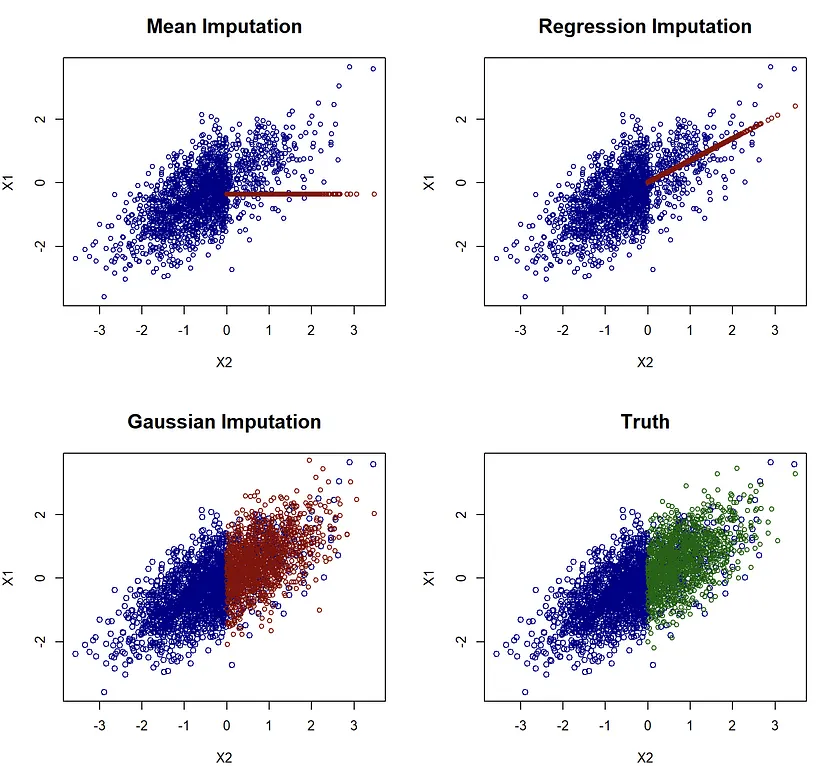

Missingness
Misc
Packages
- {mice} (Multivariate Imputation by Chained Equations) - Imputes mixes of continuous, binary, unordered categorical and ordered categorical data. Multiple methods
- Based on Fully Conditional Specification, where each incomplete variable is imputed by a separate model.
- Impute continuous two-level data, and maintain consistency between imputations by means of passive imputation.
- Many diagnostic plots are implemented to inspect the quality of the imputations.
- {rbmi} - Imputation of missing data in clinical trials with continuous multivariate normal longitudinal outcomes.
- Supports imputation under a missing at random (MAR) assumption, reference-based imputation methods, and delta adjustments (as required for sensitivity analysis such as tipping point analyses).
- Methods
- Bayesian and approximate Bayesian multiple imputation combined with Rubin’s rules for inference
- Frequentist conditional mean imputation combined with (jackknife or bootstrap) resampling
- {naniar} (VIgnette)- Tidyverse compliant methods to summarize, visualize, and manipulate missing data. EDA package.
- {VIM} - Tools for the visualization of missing and/or imputed values, which can be used for exploring the data and the structure of the missing and/or imputed values. The quality of imputation can be visually explored using various univariate, bivariate, multiple and multivariate plot methods.
- Imputation functions that implement techniques to replace missing values with imputed values including hotdeck, pca, xgboost, rf, IRMI, and others
- Visualization functions that provide extensions of common base graphics which use a special way of highlighting missing and imputed values.
- {simputation} - Model-based, multivariate, donar, and simple stat methods available
- Wraps other package functions for a unified interface
- Hotdeck methods, rf, cart, knn, regularized regression, etc.
- {NPBayesImputeCat}: Non-Parametric Bayesian Multiple Imputation for Categorical Data
- Provides routines to create multiple imputations for missing data and create synthetic data for statistical disclosure control, for multivariate categorical data, with or without structural zeros
- Imputations and syntheses are based on Dirichlet process mixtures of multinomial distributions, which is a non-parametric Bayesian modeling approach that allows for flexible joint modeling
- Vignette
- {mgdc} - Provides functions to impute missing values using Gaussian copulas for mixed data types. Think this is only for MCAR (and possibly MAR).
- {EHQL-Impute} (Paper)- Utilizes the EHQL Gaussian copula to impute MNAR missing values
- Provides the ability to incorporate auxiliary quantiles for each study variable based on subject matter expertise, published statistics, or a sensitivity analysis.
- {CoImp} - Parametric and Non-Parametric Copula-Based Imputation Methods
- The appropriate types of missingness are not explicitly mentioned in the docs, but based on the dgp functions, MCAR and MAR seem to the use cases.
- {DebiasInfer} (Paper) - Debiasing method for conducting valid inference on the high-dimensional linear regression function with missing outcomes that are MAR
- Combines a Lasso pilot estimate of the regression function with a bias correction term based on the weighted residuals of the Lasso regression. The weights depend on estimates of the missingness probabilities (propensity scores) and solve a convex optimization program that trades off bias and variance optimally.
- {Debias-Infer}
- {randomForestSRC} - Fast Unified Random Forests for Survival, Regression, and Classification (RF-SRC)
- A random forest is grown and used to impute missing data
- {mixgb} (Paper) - Based on XGBoost, subsampling, and predictive mean matching to capture nonlinearity and interactions. Efficient for medium and large datasets (Deng and Lumley)
- Subsampling and predictive mean matching reduces bias and better accounts for appropriate imputation variability
- Missing data can reduce the statistical power of a study and can produce biased estimates, leading to invalid conclusions
- Also see
- EDA >> Missingness
- Model Building, tidymodels >> Recipe >> Imputation
- Bagging and knn methods for cross-sectional data
- Rolling method for time series data
- Resources
- Applied Missing Data Analysis
- Harrell RMS 3.5 Strategies for Developing an Imputation Model
- Flexible Imputation of Missing Data
- Introduction to Regression Methods for Public Health Using R: Chapter 9 Multiple Imputation of Missing Data
- Papers
- Handling Missingness, Failures, and Non-Convergence in Simulation Studies: A Review of Current Practices and Recommendations
- Multiple imputation for longitudinal data: A tutorial
- Imputation Matters: A Deeper Look into an Overlooked Step in Longitudinal Health and Behavior Sensing Research
- Autoencoder approach. Indicated they have a github repo, but haven’t released the code yet.
- Recommendations (article)
- N > 200 \(\rightarrow\) Nonparametric
- {mice::mice.imput.cart} (decision trees)
- Fits one decision tree then samples from the leaves of that tree which approximates drawing samples from the conditional distribution
- {mice-drf} (distributional random forest)
- DRF stimates distributions in its leaves, so sampling using it’s predictions is like sampling from a conditional distribution (See Algorithms, ML >> Trees >> Distributional Trees/Forests)
- {missForest} doesn’t doesn’t do this. It just uses the predictions as the imputed values which essentially a conditional mean method and not a distributional method. (See Choosing a Method)
- Currently, DL models like GAIN perform well, but aren’t significantly outperforming ML models
- {mice::mice.imput.cart} (decision trees)
- N < 200 \(\rightarrow\) Parametric
- e.g. {mice::mice.impute.norm.nob} (Gaussian: uses variance of residuals of an
lm, and predictions (means) as parameters of a Normal distribution (rnorm), then gets the imputed values by drawing from that distribution)
- e.g. {mice::mice.impute.norm.nob} (Gaussian: uses variance of residuals of an
- For Tree-base Models (source, Appendix B.1)
- Numerical: Impute missing values with very large or very small values outside the range of the training data (Ding & Simonoff, 2010), as the tree can then split between available and imputed data, thereby preserving the information about the fact that data is missing without the need for an extra column.
- Categorical: Create a new level for missing values.
- N > 200 \(\rightarrow\) Nonparametric
- “But more precisely, even having the correct model of the analysis stage does not absolve the analyst of considering the relationship between the imputation stage variables, the causal model, and the missingness mechanism. It turns out that in this simple example, imputing with an analysis-stage collider is innocuous (so long as it is excluded at the analysis stage). But imputation-stage colliders can wreck MI even if they are excluded from the analysis stage.”
- **Don’t impute missing values before your training/test split
- Imputing Types full-information maximum likelihood
- Multiple imputation
- One-Step Bayesian imputation
- Missness Types (MCAR, MAR, and MNAR)
.png)
- MNAR is also known as “nonignorable missingness.”
- Under MCAR: (source)
- Statistical methodologies can be employed that are easy to interpret and make good use of all incomplete data, with solid theoretical guarantees having been developed in various modern statistical problems such as high-dimensional regression, high-dimensional or sparse principal component analysis, classification, precision matrix, and changepoint estimation
- It allows for the use of a simple complete-case analysis which, in certain cases, such as when we have small sample sizes, can be preferable to complex procedures.
- {mice::mcar} - Jamshidian and Jalal’s (2010) Non-Parametric MCAR Test
- k-sample tests of the equality of covariance matrices, given complete data
- Compares the sample covariance matrix associated to a given missingness pattern to the corresponding submatrix of an estimated complete covariance matrix
- Requires a complete covariance matrix to be consistently estimated
- {MCARtest::MCAR_meancovTest} - Optimal nonparametric bootstrap testing of MCAR (Barrett and Bordino 2024, Paper)
- Tests the compatibility of a collection of covariance matrices, motivated by the fact that this procedure is feasible when the dimension grows with the sample size.
- Makes no assumptions on the form of the underlying distributions and doesn’t require the estimation of a complete covariance matrix.
- Multivariate Imputation with Chained Equation (MICE) assumes MAR
- Method entails creating multiple imputations for each missing value as opposed to just one. The algorithm addresses statistical uncertainty and enables users to impute values for data of different types.
- Stochastic Regression Imputation is problematic
- Popular among practitioners though
- Issues
- Stochastic regression imputation might lead to implausible values (e.g. negative incomes).
- Stochastic regression imputation has problems with heteroscedastic data
- Bayesian PMM handles these issues
- Missingness in RCT due dropouts (aka loss to follow-up)
- Notes from To impute or not: the case of an RCT with baseline and follow-up measurements
- {mice} used for imputation
- Bias in treatment effect due to missingness
- If there are adjustment variables that affect unit dropout then bias increases as variation in treatment effect across units increases (aka hetergeneity)
- In the example, a baseline measurement of the outcome variable, used an explanatory variable, was also causal of missingness. Greater values of this variable resulted in greater bias
- Using multiple imputation resulted in less bias than just using complete cases, but still underestimated the treatment effect.
- If there are no such variables, then there is no bias due to hetergeneous treatment effects
- Complete cases of the data can be used
- If there are adjustment variables that affect unit dropout then bias increases as variation in treatment effect across units increases (aka hetergeneity)
- Last observation carried forward
- Sometimes used in clinical trials because it tends to be conservative, setting a higher bar for showing that a new therapy is significantly better than a traditional therapy.
- Must assume that the previous value (e.g. 2008 score) is similar to the ahead value (e.g. 2010 score).
- Information about trajectories over time is thrown away.
- Notes from To impute or not: the case of an RCT with baseline and follow-up measurements
Choosing a Method
- (** Don’t use this. Just putting it here in order to be aware of it **) “Standard Procedure†for choosing an imputation method (article)
- Issues
- Some methods will be favored based on the metric used
- Conditional Means Methods (RMSE)
- Conditional Medians Methods (MAE)
- Methods that use a conditional mean (e.g. regression, mean, knn, or {missForest} as the imputed value will be preferred by RMSE
- RMSE would choose the Regression imputation model rather than the Gaussian imputation model even though the Gaussian model best represents the data.
- Similar situation with using MAE and models that estimate conditional medians
- Some methods will be favored based on the metric used
- Steps
- Select some observations
- Set their status to missing
- Impute them with different methods
- Compare their imputation accuracy
- For numeric variables, RMSE or MAE typically used
- For categoricals, percentage of correct predictions (PCP)
- Issues
- Initial Considerations
- If a dataset’s feature has missing data in more than 80% of its records, it is probably best to remove that feature altogether.
- If a feature with missing values is strongly correlated with other missing values, it’s worth considering using advanced imputation techniques that use information from those other features to derive values to replace the missing data.
- If a feature’s values are missing not at random (MNAR), remove methods like MICE from consideration.
{kind=link}
Diagnostics
- Packages
- {vismi} - Visual comparisons between the original data and multiply imputed data. More easily interpretted than VIM’s visuals IMO. Other visuals available including discrete vs * and trivariate plots.
- Univariate Comparisons
- Continuous: Compares distributions and quantiles (histogram, box)
- Categoricals: Compares proportions (column)
- Ordinal, Discrete: Compares distributions and quantiles
- Original and imputed distributions, quantiles, etc. should look very similar if the imputation method was successful. If not, this could indicate an assumption for that method wasn’t satisfied (e.g. MCAR).
- Bivariate Comparisons
- Facetted Scatter Plots - Shows the relationship of the originals and allows you to compare that relationship to the multiply imputed values
- Facetted Continuous vs Categorical - Boxplots that show the relationship of the quantiles of each category of the original data. Then does the same thing with the multiply imputed data
- Facetted Categorical vs Categorical - Column chart with each category on the X-axis and proportion on the Y-axis facetted by the category of another variable. Includes column charts for the multiply imputed sets for comparison.
- Univariate Comparisons
- {VIM} - There are more plots available, but I didn’t understand them. They looked like something out of Friendly’s mad scientist brain.
- Univariate
aggr- Calculates or plots the amount of missing/imputed values in each variable and the amount of missing/imputed values in certain combinations of variablesbarMiss(categorical) andhistMiss(continuous, discrete, ordinal) - Stacked bar/Histogram showing proportions of original, imputed, and still missing (some methods can’t fully impute all missing values due extreme missingness in other predictors)
- Bivariate
scatterMiss- Bivariate scatter plot with dashed lines marking still-missing values- Percentage coverage ellipses can be drawn to give a clue about the shape of the bivariate data distribution.
matrixplot- Y-axis is the row index and the X-axis is partitioned for each variable. Colored cells indicated where imputed and still missing values are located withing datamarginplot- A scatterplot with boxplots of imputed and original data in the marginspbox- Creates parallel boxplots of a variable and it’s imputed values, and it does it for multiple variables- There is a variable of interest (white) that is compared against other predictors (blue)
spineMiss- Categorical on the X-axis where the cell size indicates that categories proportion to the other categories. The Y-axis is proportion of a variable. The cells are broken up by the proportion of imputed to original values of the Y variable.

- Univariate
- {vismi} - Visual comparisons between the original data and multiply imputed data. More easily interpretted than VIM’s visuals IMO. Other visuals available including discrete vs * and trivariate plots.
- I-Score
- {Iscores}, Paper, Article
- A proper scoring rule metric
- Consistent for MCAR, but MAR requires additional assumptions
- “valid under missing at random (MAR) if we restrict the random projections in variable space to always include all variables, which in turn requires access to some complete observations”
- Kinda complicated. Read the paper for details
- Energy Statistic (E-Statistic)
- {energy::eqdist.e}
- Get the e-statistic using the imputed data and the original data. Choose the imputation model with the lower e-statistic
- See Distributions >> Tests for more details about the E-Statistic
Bayesian
- Misc
- Resources
- Ch.10 Multiple Imputation, Applied Modelling in Drug Development
- Case Studies using {brms}
- Ch.10 Multiple Imputation, Applied Modelling in Drug Development
- Resources
- Predictive Mean Matching (PMM)
Notes from:
Uses a bayesian regression to predict a missing value, then randomly picks a value from a group of observed values that are closest to the predicted value.
Steps
- Estimate a linear regression model:
- Use the variable we want to impute as Y.
- Use a set of good predictors as \(X\) (Guidelines for the selection of \(X\) can be found in van Buuren, 2012, p. 128).
- Use only the observed values of \(X\) and \(Y\) to estimate the model.
- Draw randomly from the posterior predictive distribution of \(\hat \beta\) and produce a new set of coefficients \(\beta^*\).
- This bayesian step is needed for all multiple imputation methods to create some random variability in the imputed values.
- Calculate predicted values for observed and missing \(Y\).
- Use \(\hat \beta\) to calculate predicted values for observed \(Y\).
- Use \(\beta^*\) to calculate predicted values for missing \(Y\).
- For each case where \(Y\) is missing, find the closest predicted values among cases where \(Y\) is observed.
- Example:
- \(Y_i\) is missing. Its predicted value is 10 (based on \(\beta^*\)).
- Our data consists of five observed cases of \(Y\) with the values 6, 3, 22, 7, and 12.
- In step 3, we predicted the values 7, 2, 20, 9, and 13 for these five observed cases (based on \(\hat \beta\)).
- The predictive mean matching algorithm selects the closest observed values (typically three cases) to our missing value \(Y_i\). Hence, the algorithm selects the values 7, 9, and 13 (the closest values to 10).
- Example:
- Draw randomly one of these three close cases and impute the missing value \(Y_i\) with the observed value of this close case.
- Example: Continued
- The algorithm draws randomly from 6, 7, and 12 (the observed values that correspond to the predicted values 7, 9, and 13).
- The algorithm chooses 12 and substitutes this value to \(Y_i\).
- Example: Continued
- In case of multiple imputation (strongly advised), steps 1-5 are repeated several times.
- Each repetition of steps 1-5 creates a new imputed data set.
- With multiple imputation, missing data is typically imputed 5 times.
- Estimate a linear regression model:
Example
data_imp <- complete(mice(data, m = 5, method = "pmm"))- m is the number of times to impute the data
completeformats the data into different shapes according to an action argument- Running
parmiceinstead ofmiceimputes in parallel
Multiple Imputation Fit
- AKA “multiply†imputed data
- The key difficulty multiple imputation is that the result of multiple imputation is K replicated datasets corresponding to different estimated values for the missing data in the original dataset.
- Packages
- {merTools} - Tools for aggregating results for multiply imputed Mixed Effects model data
- {bootImpute} (paper, paper) - Bootstraps and imputes incomplete datasets. Then performs inference on estimates obtained from analysing the imputed datasets
- Fitting a regression model with multiply imputed data
- See If you fit a model with multiply imputed data, you can still plot the line
- Methods
- Predict then Combine (PC)
- Combine then Predict (CP)
Rubin’s Rules
- Notes from
- Designed to pool parameter estimates, such as mean differences, regression coefficients, standard errors and to derive confidence intervals and p-values
- Assumed that the repeated parameter estimates are normally distributed
- Not valid for all statistics. For non-normal distributed statistics, a transformation is performed first.
- For correlation coefficients, a Fisher’s Z Transformation is used.
\[ Z_i = \frac{1}{2}\mbox{ln}\frac{1+r_i}{1-r_i} \]- Variance of the transformed coefficient
\[ \text{Var}(Z) = \frac{1}{n-3} \] - Z-Score
\[ \text{z-score} = \frac{Z_{\text{pooled}}}{\text{Var}(Z)} \] - Back-Transformation
\[ \begin{align} r_{\text{pooled}} &= \frac{e^{2Z_{\text{pooled}}}-1}{e^{2Z_{\text{pooled}}}+1} \\ &= \tanh(Z_{\text{pooled}}) \end{align} \]
- Variance of the transformed coefficient
- Workflow
- Start with a reasonable number of imputations (maybe 5-10)
- Run the multiple imputation procedure
- Calculate FMI from these initial imputations
- If FMI suggests you need more imputations (using the m ≈ 100 × FMI rule), then:
- Re-run the multiple imputation with the larger recommended number
- This second run is what you’ll use for your final analysis
- Pooled Mean Difference
\[ \bar\theta = \frac{1}{m} \sum_{i = 1}^m \theta_i \]- \(\bar \theta\) is the pooled parameter estimate
- \(\theta_i\) is the parameter estimate (e.g. mean difference) for the \(i^{\text{th}}\) imputed dataset
- \(m\) is the total number of imputed datasets
- Pooled Standard Error
- Within-Imputation Variance
\[ V_W = \frac{1}{m} \sum_{i=1}^m \text{SE}_i^2 \]- \(\text{SE}_i^2\) is the squared standard error for the \(i^{\text{th}}\) imputed dataset
- Between-Imputation Variance
\[ V_B = \frac{\sum_{i=1}^m ( \bar \theta - \theta_i)^2}{m-1} \] - Pooled Standard Error
\[ \text{SE}_{\text{pooled}} = \sqrt{V_W + V_B + \frac{V_B}{m}} \]
- Within-Imputation Variance
- Wald Test Statistic
\[ W = \frac{(\bar \theta - \theta_0)^2}{\text{SE}_{\text{pooled}}} \]- \(\theta_0\) is the parameter value under the null hypothesis (typically 0)
- Statistic follows a t-distribution, \(t_{\text{dof}, 1-\alpha/2}\), which can be used for the two-sided p-value.
- Degrees of Freedom (dof)
- Original dof
\[ \begin{align} \text{dof}_{\text{orig}} &= \frac{m-1}{\lambda^2} \\ &= (m-1) \cdot (1 + \frac{1}{r})^2 \end{align} \]- \(m\) is the number of imputed datasets
- \(\lambda\) is the proportion of total variance due to missingness
- \(r\) is the relative increase in variance due to nonresponse (RIV)
\[ r = \frac{V_B + \frac{V_B}{m}}{V_W} \]
- Adjusted dof
\[ \begin{align} &\text{dof}_{\text{adj}} = \frac{\text{dof}_{\text{orig}} \cdot \text{dof}_{\text{obs}}}{\text{dof}_{\text{orig}} + \text{dof}_{\text{obs}}}\\ &\text{where} \;\; \text{dof}_{\text{obs}} = \frac{(n-k) + 1}{(n-k) + 3} \cdot (n-k) \cdot (1-\lambda) \end{align} \]- \(k\) is the number of parameters to fit
- So if you’re doing a multiple regression with 3 predictors plus an intercept, \(k\) would be 4.
- Therefore, the term \(n-k\) represents your model’s residual degrees of freedom before adjusting for missing data.
- For a correlation coefficient, \(k = 2\), because you’re estimating two parameters: the means of both variables involved in the correlation.
- So if you’re doing a multiple regression with 3 predictors plus an intercept, \(k\) would be 4.
- Used by {mice}
- \(k\) is the number of parameters to fit
- Original dof
- Confidence Interval (CI)
\[ \bar \theta \pm t_{\text{dof}, 1-\alpha/2} \cdot \text{SE}_{\text{pooled}} \]- \(\bar \theta\) is the pooled estimate
- Fraction of Missing Information (FMI)
\[ \text{FMI} = \frac{\text{RIV} + \frac{2}{\text{dof}_{\text{adj}} + 3}}{\text{1 + RIV}} \]- This is an adjusted value of \(\lambda\). It takes into account that there are a finite number of imputations.
- Guidelines
- Higher FMI generally requires more imputations
- A common rule is: m ≈ 100 × FMI for good efficiency
- Relative Efficiency
\[ \text{RE} = \frac{1}{1 + \frac{\text{FMI}}{m}} \]- The relative efficiency of your MI estimate compared to using infinite imputations.
- Typically \(\gt 95\%\) is consider sufficient for most use cases.
Time Series
- Packages
- Resources
- Handle Missing Values in Time Series For Beginners
- Forward/Backward Filling, Linear/Spline Interpolation
- Seasonality imputation
- Older article that shows an older version {imputeTS} which now handles seasonality automatically and has additional methods
- Handle Missing Values in Time Series For Beginners
- Interpolation methods rely on the assumption that adjacent observations are similar to one another. These methods do not work well when this assumption is not valid, especially when the presence of strong seasonality.
- So you must de-seasonalize the series before applying interpolation — then re-seasonalize.
- If seasonality is present, mean, median, mode, random assignment, or previous value methods shouldn’t be used.
ML
- Random Forest
- See StatQuest: Random Forests Part 2: Missing data and clustering video for more details
- Process: Classification model
- Missingness is in the training data
- Choose intial values for the missing data
- Looks at that predictor’s values that have the same outcome value as the observation with the missing data
- Categorical: For example, if the row has an observed outcome of 1 (i.e. event), then it will look at that predictor’s values with outcome = 1 and choose the most popular category for the missing value
- Numeric: same as categorical, except the median value of predictor is chosen for the missing value
- Looks at that predictor’s values that have the same outcome value as the observation with the missing data
- Create a “Proximity Matrix†to determine which observation is most similar to observation with the missing data
- The matrix values are counts of how many times each row ends up in the node as the missing data row across all the trees in the forest
- The counts are then divided by the number of trees in the forest
- Categorical: Weights for each category are calculated (see video). These weights are multiplied times the observed frequency of the category in the training data. The category with the highest weighted frequency becomes the new value for the missing data.
- Numerical: The weights are used to calculate a weighted average. So, weight * median is the new value for the missing data
- Process is repeated until the values don’t change within a tolerance
- Choose intial values for the missing data
- Missingness in the out-of-sample data
- A copy of the observation with the missingness is made for each outcome category.
- The proximity matrix procedure is done for each copy
- Then a prediction for each copy with it’s new value is made in each tree of the forest. (of course the label for each copy has now been stripped)
- Whichever copy had it’s (stripped) outcome label predicted correctly by the most trees wins and that label is prediction for that observation
- Missingness is in the training data